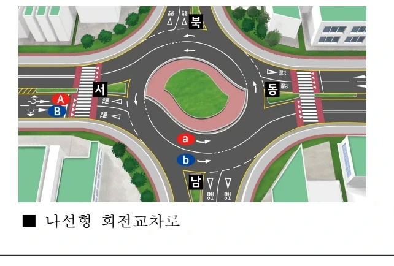

813. 다음과 같은 교차로에서 가장 안전한 통행방법 2가지를 설명한 것은?

- ①A차로에서 진입하려는 때에 왼쪽 방향지시기를 작동하였다.
- ②A차로에서 진입한 운전자가 즉시 a차로에 진입하여 회전하다가 북쪽으로 진출하였다.
- ③B차로에서 진입하려는 때에 오른쪽 방향지시기를 작동하였다.
- ④B차로에서 진입한 운전자가 즉시 b차로로 진입하여 회전하다가 a차로로 진로변경하여 북쪽방향으로 진출하였다.
- ⑤안쪽에서 회전하다가 진출하려는 때에 왼쪽 방향지시기를 작동하였다.
정답 보기
정답
① A차로에서 진입하려는 때에 왼쪽 방향지시기를 작동하였다.
② A차로에서 진입한 운전자가 즉시 a차로에 진입하여 회전하다가
북쪽으로 진출하였다.
근거·해설
제시된 교차로는 ‘나선형 회전교차로’이다. A차로에서 진입하는 운전자는 회전하는 차에 양보한 후 즉시 a차로로 진입해야 한다. 이 때는 백색점선을 이용해야 한다. A차로의 진출방향은 동쪽과 북쪽이다. B차로에서 진입하는 운전자는 회전하는 차에 양보한 후 즉시 b차로로 진입해야 한다. B차로의 진출방향은 남쪽과 동쪽이다. 또 회전교차로에서 진입하려는 때는 왼쪽, 진출하려는 때에는 오른쪽 방향지시기를 작동해야만 한다.